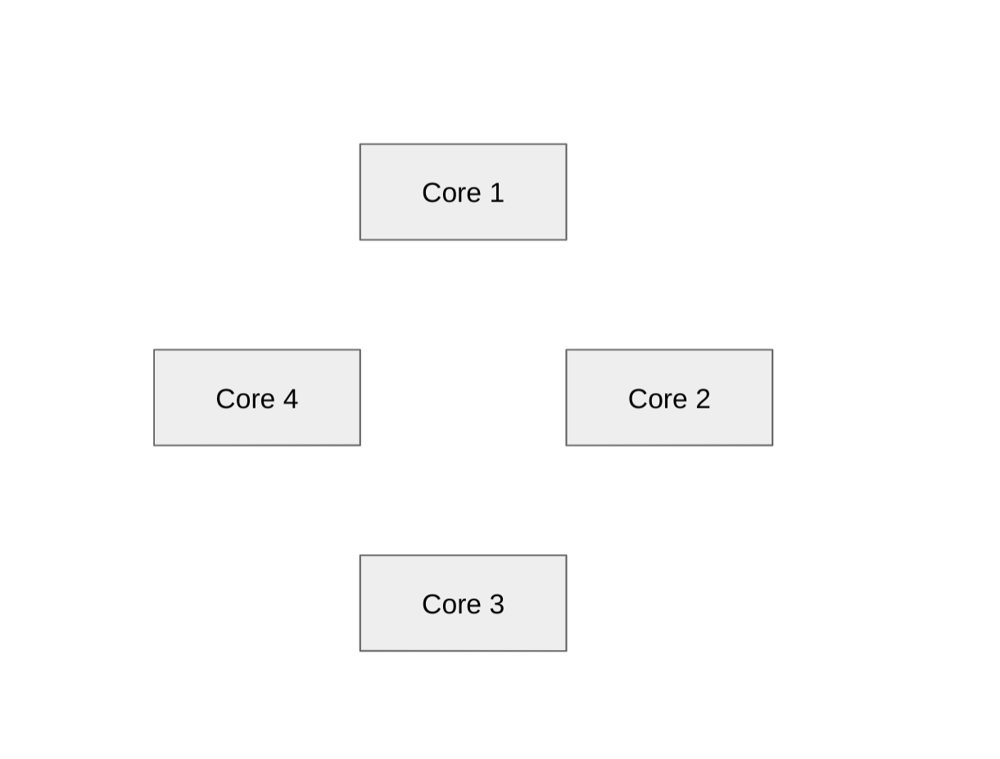
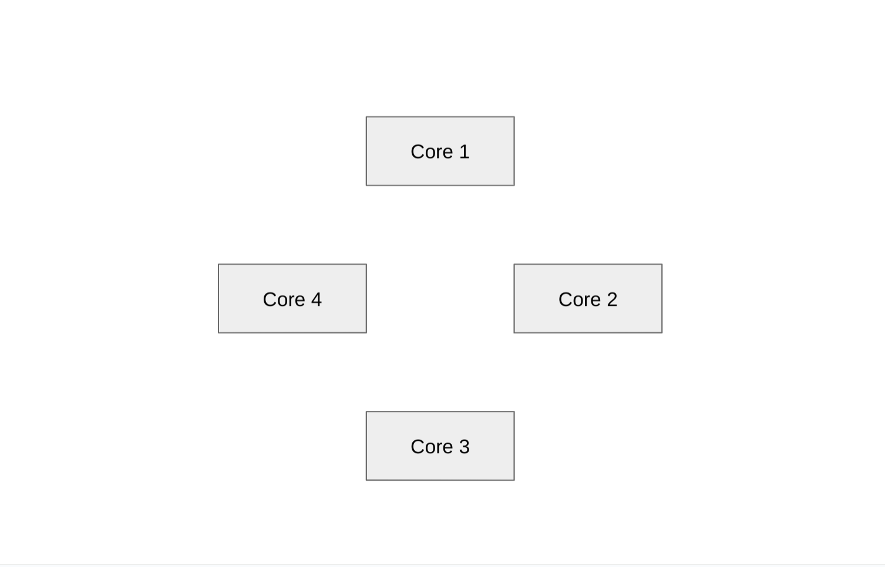
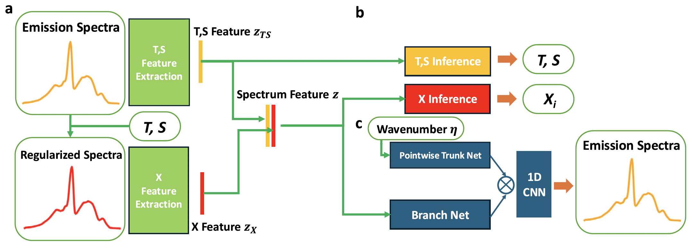
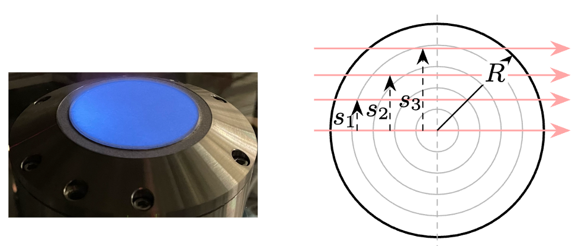
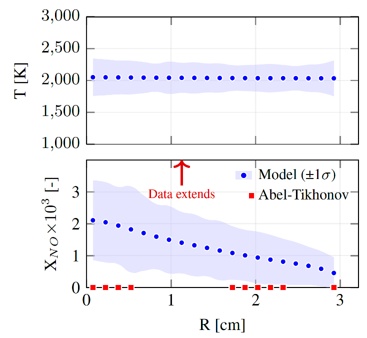

I work on GPU-accelerated thermal-fluid physics simulation, differentiable
rendering,
and Monte Carlo light transport, with a focus on radiative transfer, inverse
modeling in chemical reacting systems, and large-scale HPC.
GPU-accelerated Monte Carlo ray and path tracing in participating media
Differentiable rendering and inverse graphics for 3D thermochemical
reconstruction
Differentiable physics and neural ODEs
Physics-based light transport and spectral/volumetric rendering
Neural and ML-augmented models for simulation and diagnostics
I’m particularly interested in research at the interface of
graphics, simulation, and machine learning:
algorithms that bridge accurate physical modeling with efficient GPU implementation and
differentiable inference.
Selected Projects
Lagrangian Particle Tracking on TPUs – Google Research
2024 · Wildfire CFD · TPU / XLA · Swirl-LM
Implemented a lagrangian particle tracking (LPT) module for wildfire
simulations
in Swirl-LM, running at scale on Google Cloud TPUs.
The work enables
multiphase jet-in-cross-flow test cases relevant to wildfire spotting, with particles
evolving
under drag, gravity, and mass loss on up to 256 TPU cores.
The implementation reconciles highly dynamic particle workloads with
static-shape XLA, using fixed-size particle buffers and a
field-exchange parallelization strategy where cores share the global
particle
workload. This required careful design of SPMD sharding, inter-core communication, and
mapping
between stretched-grid coordinates and physical space.
256-TPU simulation of particles in cross-flow jet run on Google Cloud.
Differentiable Rendering for Flame Diagnostics – MIT
2025– · CUDA / JAX · Inverse Rendering
Developing a GPU-accelerated differentiable volume renderer for hyperspectral flame
diagnostics,
enabling reconstruction of 3D temperature and species fields via backpropagation through
non-gray light-transport models. Combined diffusion-style priors with physical rendering
for
robust reconstruction from sparse views.
Multi-view stereo differentiable rendering of a flame
GPU MCRT for Participating Media – ORNL / UConn
2020–2024 · CUDA · Monte Carlo Light Transport
Developed a distributed backward Monte Carlo ray tracing (BMCRT) solver for radiatively
participating media, achieving improved scaling on multi-GPU systems. The approach uses
a
factorized formulation that computes rank-local optical thickness and emission
contributions
independently, then communicates only small summary messages rather than full ray data.
This
reduces communication from O(cell intersections) to O(rank intersections), enabling
efficient
computation of absorption at every voxel across distributed-memory architectures.
Implemented
in Kokkos for performance portability and integrated with OpenFOAM for coupled
CFD–radiation
simulations on the Frontier supercomputer.
Developing general frameworks for inverse problems in reacting systems using
differentiable
physics, neural ODEs, and PDE-constrained optimization. The approach combines automatic
differentiation with physics-based models to infer material properties, chemical
kinetics,
and transport coefficients from experimental observations. Applications span energetic
materials,
thermal wave propagation, carbon nanotube synthesis, and complex hydrocarbon combustion
chemistry.
By embedding physics-based governing equations within differentiable frameworks
(PyTorch, JAX, Julia),
the methods enable gradient-based optimization of high-dimensional parameter spaces
while maintaining
thermodynamic consistency. This includes forward and adjoint sensitivity analysis for
systems with
hundreds of chemical species and reactions, providing robust inference from sparse,
noisy measurements.
Conducting comprehensive thermal-fluids modeling across diverse combustion and
propulsion
systems, including hypersonic propulsion, gas turbine combustors, spray detonations, and
thermal barrier coatings. Work spans GPU-accelerated CFD using Discontinuous Galerkin
and
finite volume methods, conjugate heat transfer with participating media radiation, and
reduced-order modeling of multi-phase reacting flows.
Collaborations include the U.S. Naval Research Laboratory (hypersonic ramjet
propulsion),
Pratt & Whitney and Penn State (gas turbine combustor analysis), and fundamental studies
of spray detonation dynamics. Applications include time-accurate reacting Navier-Stokes
simulations, radiation-convection coupling in high-temperature environments, and
validation
of design tools against experimental data.
CFDReacting FlowHeat TransferMultiphase Flow
Selected Publications
Tricard, N., Fraga, G., Zhao, X., Optimal parameters of Monte Carlo ray tracing
solver for radiation modeling in fire,
Proceedings of the Combustion Institute, 2024.
Chen, Z., Tricard, N., Deng, S., Hybrid physics–machine learning model for
multispecies and temperature inference from FTIR spectra,
Proceedings of the Combustion Institute, 2025.
Wang, L., Tricard, N., Chen, Z., Deng, S., Progress in computational methods
and mechanistic insights on the growth of carbon nanotubes, Nanoscale, 2025.
Tricard, N., Kim, S., Deng, S., Inferring complex chemistry in thermal
waves, in preparation for PNAS.
CV
A detailed CV (including full publication list and research experience) is available
here as a PDF.
Contact
For research collaborations, internship opportunities, or questions about my work, feel free to reach
out:
Lagrangian Particle Tracking on TPUs – Google Research
2024 · Wildfire CFD · TPU / XLA · Swirl-LM
During my internship at Google Research (Athena / Swirl-LM), I implemented a
lagrangian particle tracking (LPT) module for wildfire simulations on
Google Cloud TPUs. The target application is modeling wildfire
spotting—the transport of burning embers that can ignite new fires far ahead of
the main front.
The work extends Swirl-LM from single-phase CFD to a fully multiphase framework, tracking
hundreds of thousands of particles in a jet-in-cross-flow configuration on up to
256 TPU cores. Particles evolve according to drag-based equations of
motion with inertia, gravity, and mass loss, and are tightly coupled to the underlying
flow field through explicit time integration.
Designed fixed-size lpt_field_ints and lpt_field_floats
tensors
with an n_max cap per core to satisfy
static-shape XLA constraints while supporting highly dynamic particle
counts.
Implemented a field-exchange parallelization strategy where
cores share the global particle workload, decoupled from local mesh ownership.
Fluid properties at particle locations are communicated each time step using
PAIRWISE and ONE_SHUFFLE inter-TPU communication
modes.
Added support for periodic boundary conditions, gravity, and a
stretched grid representation, including efficient mapping between
physical and mapped coordinates.
Performed strong and weak scaling studies up to 256 cores, analyzing
communication patterns and demonstrating that the LPT module can scale alongside
Swirl-LM’s
flow solver.
Identified and reported a UI / XLA bug in the TPU stack, contributing
benchmarks for dynamically varying workloads under XLA compilation.
TPUXLA / HLOSPMDMultiphase FlowWildfire Spotting
Multiphase jet-in-cross-flow side view.
Aft view of Lagrangian Particle Tracking.

Pairwise communication strategy.

One-shuffle communication strategy.
Ongoing Work: 3-D
Reconstruction from External Images
I'm currently working on extending these ideas to 3-D reconstruction of temperature and
species fields from external camera images. This work connects the latest optimization-based
approaches from the computer vision community—specifically Neural Radiance Fields
(NeRF) and Gaussian Splatting—with physics-based volume
rendering for combustion diagnostics.
The key challenge is adapting these CV techniques to handle participating media (where light
gets absorbed and scattered as it passes through the flame) rather than just surface
rendering. I'm implementing this entirely in CUDA with manually written
differentiable operators, which allows for optimal GPU acceleration and fine-grained control
over the rendering pipeline. This approach enables efficient gradient-based optimization of
3-D thermochemical fields directly from multi-view camera observations.
The core approach addresses the ill-posed nature of the inverse tomography problem by
combining models with strong inductive bias (NeRF/Gaussian Splatting) with data-enhancing
regularization strategies. This includes both physics-informed regularizers
that enforce consistency with radiative transfer equations and thermodynamic constraints, as
well
as data-driven regularizers learned from training data to capture spatial
smoothness and structural priors. By jointly optimizing the 3-D field representation with
these
complementary regularization terms, the method reduces solution ambiguity and enables robust
reconstruction from sparse, noisy multi-view observations.
Hybrid Physics-ML for
FTIR Spectra (1-D Reconstruction)
In earlier work, I contributed to a hybrid physics-machine learning framework for inferring
temperature, path length, and species mole fractions from FTIR emission spectra of ammonia
flames. The model is trained on high-fidelity synthetic spectra generated via line-by-line
radiative transfer using HITEMP/HITRAN spectroscopic databases.
To address challenges of spectral overlap, minor-species detectability, and measurement
noise, the architecture incorporates physics-based regularization and a self-supervised
spectrum reconstruction module. The reconstruction module enforces consistency with the
radiative transfer equation, serving as an auxiliary task that improves the learned spectral
representation. This hybrid approach enables robust multi-target inference across species
spanning several orders of magnitude in concentration, outperforming standard partial least
squares regression while remaining compact and interpretable.

Hybrid physics-ML algorithm for 1-D FTIR reconstruction
Differentiable
Spectroscopy for TDLAS (McKenna Burner Example)
Another example applies differentiable physics to tunable diode laser absorption
spectroscopy
(TDLAS) for reconstructing temperature and NO fields in an axisymmetric McKenna burner. By
implementing the Beer-Lambert law in JAX, the method computes exact
gradients
of predicted spectra with respect to temperature, species concentrations, and calibration
parameters, enabling joint optimization of flame state and nuisance effects like laser
drift.
For uncertainty quantification, I use Stein Variational Gradient Descent
(SVGD) to approximate the full posterior distribution over possible flame
states. SVGD maintains a set of candidate solutions that evolve to match the data while
respecting the physics, providing uncertainty bands that naturally widen in regions with
sparse constraints. This approach enables robust reconstruction from as little as a single
noisy line-of-sight measurement, with quantified uncertainty that reflects data limitations.
Acknowledgments: ExxonMobil Corporation and GE Vernova.

Axisymmetric flame reconstruction domain

Temperature and pollutant NO inference from a single line-of-sight laser in a real
ammonia experiment
Developing general frameworks for inverse problems in reacting systems using differentiable physics,
neural ODEs, and PDE-constrained optimization. The approach combines automatic differentiation with
physics-based models to infer material properties, chemical kinetics, and transport coefficients
from
experimental observations.
Reaction-Diffusion Inference
in Energetic Materials
Application: Energetic Materials Characterization Period: August 2023 – present Collaborators: DENG Lab (MIT)
Developing methods for simultaneous reaction and transport inference in thermal wave
reaction-diffusion
equations using differentiable physics and neural ODEs. The approach combines PDE-constrained
optimization
with automatic differentiation to learn material properties and chemical kinetics from observations
of temperature. This has strong applications in areas from weather modeling to propulsion systems
and wildfires.
Introducing multi-step, complex chemistry inference through symbolic machine learning to enhance
inverse
modeling capabilities of existing inference tools. Implementation uses automatic differentiation and
adjoint
sensitivity analysis in the Julia programming language, enabling joint estimation of chemical
reaction rates
and transport properties (diffusivity, thermal conductivity) from observed temperature and species
evolution
profiles.
Neural ODEs for Chemical
Kinetics
Application: Complex Reaction Mechanism Inference Period: August 2023 – May 2024 Collaborators: DENG Lab (MIT)
Applied neural ordinary differential equations (ODEs) in the form of the chemical reaction neural
network (CRNN) to learn kinetic rates of stiff chemical
reactions,
scaling to complex methane, JP-10, and hydrocarbon chemical mechanisms with hundreds of species and
thousands
of reactions. By embedding physics-based reaction networks within a differentiable framework, the
method learns
rate constants and reaction pathways consistent with both observed data and thermodynamic
constraints.
The approach uses forward and adjoint sensitivity analysis to compute gradients efficiently,
enabling
gradient-based optimization of high-dimensional parameter spaces. This includes handling stiff
chemical
systems where reaction timescales span many orders of magnitude, requiring specialized ODE solvers
and
careful numerical treatment.
Neural-ODE Analysis of Carbon
Nanotube Synthesis
Application: CNT Reactor Chemistry & FTIR Diagnostics Period: December 2023 – present Collaborators: DENG Lab (MIT)
Inferred CNT reactor chemistry from radiation diagnostics to improve in-situ understanding
of
chemical vapor deposition reactors and the growth of carbon nanotubes. Applied CRNN to directly
extract CNT growth rates from FTIR spectra, enabling more efficient exploration of CNT growth
mechanisms and reaction pathways.
Developed spatial temperature and composition inference from FTIR spectra for real-time monitoring
of
floating catalyst chemical vapor deposition (FCCVD) processes. This work combines spectroscopic
measurements
with inverse modeling to reconstruct reactor state from emission/absorption spectra, providing
critical
feedback for process control and optimization.
Conducting comprehensive thermal-fluids modeling across diverse combustion and propulsion systems,
spanning GPU-accelerated CFD, conjugate heat transfer with participating media radiation, and
reduced-order modeling of multi-phase reacting flows.
Solid Fuel Ramjet (SFRJ)
Modeling
Institution: U.S. Naval Research Laboratory Period: May 2022 – March 2024 Focus: Hypersonic Propulsion
Constructed mesh and executed time-accurate simulations of simplified hypersonic missile engines
using
GPU-accelerated Discontinuous-Galerkin (DG) reacting Navier-Stokes CFD. Contributed boundary
conditions
and numerics to C++-based military laboratory CFD code, enabling high-fidelity modeling of solid
fuel
ramjet combustors at varying Reynolds numbers and inlet conditions.
The work investigated the effect of inlet boundary layer development and fluctuations on reacting
flow
in a backward-facing step combustor, comparing various turbulence models and inlet conditions.
Results
inform design of next-generation high-speed propulsion systems.
Related publication:
Tricard, N. and Bojko, B., Solid-fuel reacting flow in a backward-facing step combustor at
varying
Reynolds numbers and inlet conditions, Journal of Propulsion and Power, in press (2025).
Gas Turbine Combustor
Radiation Modeling
Institution: UConn CTF Laboratory, Pratt & Whitney Period: August 2020 – May 2022 Focus: Commercial Aviation Engines
Collaborated with the United Technologies Research Center to model radiative heat transfer in the
Pratt & Whitney Geared Turbo-Fan combustor for the Airbus A320neo using GPU-accelerated Monte Carlo
ray tracing. Analyzed the influence of non-gray radiation within the fluid, on the walls, and in the
turbine section of the engine.
Additional work with Penn State experimentalists investigated relative effects of radiation and
convection
in a gas-turbine combustor, applying GPU-accelerated radiation models to validate and interpret
experimental
observations in a Rich-burn, Quick-mix, Lean-burn (RQL) configuration.
Related publications:
- Tricard, N., Johson, A., Meister, N., Hemchand, A., Zhao, X., Numerical Analysis of Radiative
Heat
Transfer in a Rich-burn, Quick-mix, Lean-burn Combustor, ASME Turbo Expo, Memphis, TN
(2025).
- Colborn, J., O'Connor, J., Tricard, N., et al., Interpreting heat flux measurements in a
vitiated
Backward-Facing step flow, AIAA Journal (2024).
Spray Detonation Modeling
Institution: UConn CTF Laboratory Period: December 2019 – June 2022 Focus: Multiphase Combustion Dynamics
Developed reduced-order 1-D detonation models in Python by reformulating multi-phase, compressible
Euler
equations with shockwaves and complex chemistry. Investigated heterogeneous effects on steady-state
spray
detonation structure, comparing ZND-type analytical solutions with transient Direct Numerical
Simulation (DNS).
The reduced-order models achieved excellent agreement with full 1-D and 2-D Navier-Stokes DNS
solutions
while reducing computational runtime by 1,000,000× compared to transient simulations, enabling rapid
parametric studies of fuel droplet size, equivalence ratio, and pressure effects.
Related publications:
- Tricard, N., Ghosh, A., Dammati, S. S., Poludnenko, A., & Zhao, X., Steady and transient
one-dimensional simulations of multiphase dodecane/air detonations, International
Colloquium on
the Dynamics of Explosions and Reactive Systems (ICDERS), Naples, Italy, June 19-24 (2022).
- Tricard, N., & Zhao, X., One dimensional modeling of spray detonations considering loss
effects,
AIAA SCITECH 2022 Forum, San Diego, CA, USA, January 3-9 (2022).
Conjugate Heat Transfer in
Thermal Barrier Coatings
Institution: UConn CTF Laboratory Period: January 2021 – August 2021 Focus: High-Temperature Materials
Built a 3-D model of semitransparent thermal barrier coatings (TBCs) accounting for conduction,
convection,
and internal and external radiation. Coupled Monte Carlo ray tracing code (C) with MATLAB Finite
Volume
Method (FVM) conduction and convection solver to capture conjugate heat transfer.
Performed parametric studies varying TBC transparency, porosity, and three-dimensional geometric
effects,
demonstrating the importance of internal radiative transport in semitransparent ceramic coatings.
Related publication:
Tricard, N., & Zhao, X., Modeling of conjugate heat transfer within thermal barrier coatings
for combustion environments, ICHMT International Symposium on Advances in Computational
Heat
Transfer, remote presentation, August 15-19 (2021). Nominated Best Paper Presentation
Award.
Low-Pressure Turbine Modeling
Institution: Pratt & Whitney Period: May 2019 – August 2019 Focus: Turbomachinery Design Tools
Validated airfoil design software and initiated a 3D RANS CFD and 1D empirical tool validation by
comparing
computational and experimental low-pressure turbine data. Specified geometry and boundary
conditions,
constructed mesh, and executed time-accurate 3D multi-row CFD on multiple turbine configurations.
Improved knowledge of tool capabilities by varying model fidelity and comparing against experimental
measurements.
Journal articles, conference proceedings, and presentations
Journal Articles & Conference
Proceedings
Tricard, N., Kim, S., and Deng, S.,
Inferring complex chemistry in thermal waves,
to be submitted to PNAS.
Tricard, N., Ge, W., Prokopenko, A., Lebrun-Grandie, D. and Zhao, X.,
Accelerated approaches to thermal radiation modeling in participating media,
to be submitted to Journal of Computational Physics.
Tricard, N., Ghosh, A., Dammati, S. S., Poludnenko, A. and Zhao, X.,
Parametric studies of ZND and reacting Navier-Stokes modeled spray-detonations,
to be submitted to Combustion and Flame.
Tricard, N. and Bojko, B.,
Solid-fuel reacting flow in a backward-facing step combustor at varying Reynolds numbers and
inlet conditions,
Journal of Propulsion and Power, in press, 02 (2025) B40052.R2.
Chen, Z., Tricard, N., Deng, S.,
Hybrid physics-machine learning model for multispecies and temperature inference from FTIR
spectra: Application to ammonia flames,
Proceedings of the Combustion Institute (PCI), 41 (2025) 105811.
DOI:
10.1016/j.proci.2025.105811
Tricard, N., Johson, A., Meister, N., Hemchand, A., Zhao, X.,
Numerical Analysis of Radiative Heat Transfer in a Rich-burn, Quick-mix, Lean-burn
Combustor,
ASME Turbo Expo, Memphis, TN, June 16–20 (2025).
DOI:
10.1115/GT2025-151901
Wang, L., Tricard, N., Chen, Z., Deng, S.,
Progress in Computational Methods and Mechanistic Insights on the Growth of Carbon
Nanotubes,
Nanoscale, 17 (2025), 11812.
DOI:
10.1039/D4NR05487C
Tricard, N., Fraga, G., & Zhao, X.,
Optimal parameters of Monte Carlo ray tracing solver with line-by-line spectral database for
radiation modeling in fire,
Proceedings of the Combustion Institute (PCI), 40, 1–4, (2024) 105293.
DOI:
10.1016/j.proci.2024.105293
Rodriguez, L. G., Tricard, N., & Zhao, X.,
A Wavenumber Selection Algorithm for Reverse Monte Carlo Simulations,
RAD-25, Kuşadasi, Türkiye, June 15–20 (2025).
Chen, Z., Tricard, N., & Deng, S.,
A Machine-Learning Method for FTIR Diagnostics and Its Application in Ammonia
Combustion,
U.S. National Combustion Meeting, Boston, MA, March 17–19 (2025).
Bojko, B., Kessler, D., Johnson, R., Deboskey, R., Tricard, N., Fisher, B.,
Geipel, C., Epshteyn, A., & Finn, M.,
Ramjet-Based Propulsion Systems for High-Speed Weapons,
Naval Science & Technology Symposium, Arlington, VA, December 9–12 (2024).
Tricard, N., Chen, Z., Wang, L, & Deng, S.,
Spatial Temperature and Composition Inference from FTIR in an FCCVD CNT Reactor,
Materials Research Society (MRS) Technical Meeting, Boston, MA, December 1–6 (2024).
Wang, L., Chen, Z., & Tricard N.,
In-situ Measurements & Multi-parameter Inversion for Modeling Property-targeted CNT
Production Through FCCVD,
Carbon Hub Technical Meeting, Houston, TX, USA, May 6-7 (2024).
Tricard, N. & Bojko, B.,
Effect of inlet boundary layer development and fluctuations on reacting flow in a
backward-facing step combustor at varying Re numbers,
Eastern States Section of the Combustion Institute (ESSCI), Athens, GA, USA, March 10-13 (2024).
Bojko, B., Patel, T., Kessler, D., DeBoskey, R., & Tricard, N.,
Investigating the Reacting Flow-Field within a Model Solid Fuel Ramjet Combustor using the
Flamelet Progress Variable Approach,
AIAA SCITECH 2024 Forum, Orlando, FL, USA, January 8-12 (2024).
Tricard, N., & Zhao, X.,
Acceleration of Monte Carlo Ray Tracing in Participating Media Using Graphics Processing
Units and Bounding Volume Hierarchies,
poster presentation, International Symposium on Radiative Transfer (RAD-23), Thessaloniki,
Greece, June 12-16 (2023).
Tricard, N., Ghosh, A., Dammati, S. S., Poludnenko, A., & Zhao, X.,
Steady and transient one-dimensional simulations of multiphase dodecane/air
detonations,
International Colloquium on the Dynamics of Explosions and Reactive Systems (ICDERS), Naples,
Italy, June 19-24 (2022).
Tricard, N., & Zhao, X.,
One dimensional modeling of spray detonations considering loss effects,
AIAA SCITECH 2022 Forum, San Diego, CA, USA, January 3-9 (2022).
Tricard, N., & Zhao, X.,
Modeling of conjugate heat transfer within thermal barrier coatings for combustion
environments,
ICHMT International Symposium on Advances in Computational Heat Transfer, remote presentation,
August 15-19 (2021).
Nominated Best Paper Presentation Award.
For a complete list including technical reports and all presentations, please refer to the
full CV (PDF).